정보처리기사(구) (2006-03-05 기출문제)
1과목: 데이터 베이스
1. 탐색 방법 중 키 값으로부터 레코드가 저장되어 있는 주소를 직접 계산하여, 산출된 주소로 바로 접근하는 방법으로 키-주소 변환 방법이라고도 하는 것은?
- 이진 탐색
- 피보나치 탐색
- 해싱 탐색
- 블록 탐색
(정답률: 68%)

2. SQL의 DROP 문은 어떠한 목적으로 사용되는가?
- 스키마, 테이블 및 뷰의 제거시에 사용된다.
- 스키마, 테이블 및 뷰의 정의시에 사용된다.
- 데이터베이스의 무결성을 체크하는데 사용된다.
- 데이터베이스를 최적화하는데 사용된다.
(정답률: 88%)
3. 데이터의 중복으로 인하여 관계연산을 처리할 때 곤란한 현상이 발생하는 것을 무엇이라 하는가?
- 이상(Anomaly)
- 제한(Restriction)
- 종속성(Dependency)
- 변환(Translation)
(정답률: 84%)
4. 관계 데이터 모델링 중 BCNF(Boyce-Codd Normal Form)에 대한 옳은 설명으로만 짝지어진 것은?
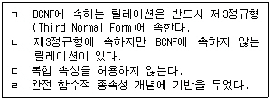
- ㄱ. ㄴ.
- ㄴ. ㄷ.
- ㄱ. ㄴ. ㄷ.
- ㄱ. ㄴ. ㄷ. ㄹ.
(정답률: 37%)
5. 물리적 데이터 독립성에 대한 설명으로 가장 적합한 것은?
- 기존 응용 프로그램에 영향을 주지 않고 데이터의 물리적 구조를 변경할 수 없는 것을 말한다.
- 기존 응용 프로그램에 영향을 주지 않고 데이터의 물리적 구조를 변경할 수 있는 것을 말한다.
- 기존 응용 프로그램에 영향을 변경하면 데이터의 물리적 구조도 이에 따라 변경되는 것을 말한다.
- 데이터의 물리적 구조를 변경할 때, 자동적으로 데이터의 논리적 구조도 변경되는 것을 말한다.
(정답률: 82%)
6. 관계 데이터 모델에서 릴레이션(Relation)에 포함되어 있는 튜플(Tuple)의 수를 무엇이라고 하는가?
- Degree
- Cardinality
- Attribute
- Cartesian Product
(정답률: 69%)
7. 3계층 스키마 중 개념(Conceptual) 스키마에 대한 설명으로 옳지 않은 것은?
- 한 기관 전체에서 필요로 하는 데이터베이스의 전체적인 논리적 구조이다.
- 물리적 저장 장치의 입장에서 본 데이터베이스 구조이다.
- 개체간의 관계와 유지해야 할 제약 조건을 나타낸다.
- 접근 권한, 보안 정책, 무결성 규칙을 명세한다.
(정답률: 71%)
8. 직접 접근 방식(DAM : Directed Access Method)에 대한 설명으로 거리가 먼 것은?
- 데이터의 입/출력이 빈번히 발생하는 곳에 응용하는 것이 좋다.
- 해싱 함수를 이용하여 레코드의 저장 위치를 결정한다.
- 다른 레코드를 참조하지 않고 어떤 레코드를 접근할 수 있다.
- 기억 공간의 효율성이 매우 좋다.
(정답률: 54%)
9. 데이터베이스 무결성과 보안의 차이점에 대한 설명 중 옳은 것은?
- 무결성은 권한이 있는 사용자로부터 데이터베이스를 보호하는 것이고, 보안은 권한이 없는 사용자로부터 데이터베이스를 보호하는 것이다.
- 무결성은 권한이 없는 사용자로부터 데이터베이스를 보호하는 것이고, 보안은 권한이 있는 사용자로부터 데이터베이스를 보호하는 것이다.
- 무결성과 보안은 모두 권한이 있는 사용자로부터 데이터베이스를 보호하는 것이지만, 보안은 사용자 계정과 비밀번호를 관리한다.
- 무결성과 보안은 모두 권한이 없는 사용자로부터 데이터베이스를 보호하는 것이지만, 무결성은 DBMS가 자동적으로 보장해 준다.
(정답률: 75%)
10. 다음의 수식을 후위 순회(Postorder Traversal)한 결과는?
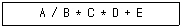
- +**/ABCDE
- A/B*C*D+E
- AB/C*D*E+
- ABCDE/**+
(정답률: 71%)
11. 데이터베이스 설계 단계와 그 단계에서 수행되는 결과의 연결이 잘못된 것은?
- 개념적 설계 단계 - 트랜잭션 모델링
- 논리적 설계 단계 - 목표 DBMS에 독립적인 논리 스키마 설계
- 물리적 설계 단계 - 목표 DBMS에 맞는 물리적 구조 설계
- 구현 단계 - 목표 DBMS DDL로 스키마 작성
(정답률: 36%)
12. 물리적 데이터베이스 설계를 수행할 때 결정할 사항으로 거리가 먼 것은?
- 어떤 인덱스를 만들 것인지에 대한 고려
- 성능 향상을 위한 개념 스키마의 변경 여부 검토
- 빈번한 질의와 트랜잭션들의 수행속도를 높이기 위한 고려
- 개념스키마와 외부스키마 설계
(정답률: 62%)
13. 릴레이션이 가지는 특성으로 옳지 않은 것은?
- 한 릴레이션에 나타난 속성값은 논리적으로 분해 가능한 값이어야 한다.
- 튜플은 서로 다른 값을 갖는다.
- 각 속성은 릴레이션 내에서 유일한 이름을 가진다.
- 하나의 릴레이션에서 튜플의 순서는 없다.
(정답률: 73%)
14. 시스템 카탈로그에 관한 설명으로 옳지 않은 것은?
- 가상테이블이며 메타데이터라고도 한다.
- 시스템 카탈로그 내의 각 테이블은 DBMS에서 지원하는 개체들에 관한 정보를 포함한다.
- 시스템의 사용자들에 관한 정보를 포함하고 있다.
- DBMS가 스스로 생성하고 유지하는 데이터베이스 내의 특별한 테이블들의 집합체이다.
(정답률: 47%)
15. 뷰(VIEW)에 관한 설명 중 잘못된 것은?
- 뷰는 SQL에서 CREATE VIEW 명령으로 정의된다.
- 뷰는 하나 이상의 기본 테이블로부터 유도되어 만들어지는 가상 테이블이다.
- 뷰는 INSERT, DELETE, UPDATE 등을 이용한 삽입, 삭제, 갱신 연산이 항상 허용된다.
- 뷰의 정의는 ALTER 문을 이용하여 변경할 수 없다.
(정답률: 74%)
16. 데이터베이스 무결성에 관한 설명으로 옳지 않은 것은?
- 개체 무결성 규정은 한 릴레이션의 기본 키를 구성하는 어떠한 속성 값도 널(NULL) 값이나 중복 값을 가질 수 없음을 규정하는 것이다.
- 무결성 규정에는 규정이름, 검사시기, 제약조건 등을 명시한다.
- 도메인 무결성 규정은 주어진 튜플의 값이 그 튜플이 정의된 도메인에 속한 값이어야 한다는 것을 규정하는 것이다.
- 트리거는 트리거 조건이 만족되는 경우에 취해야 하는 조치를 명세한다.
(정답률: 33%)
17. 데크(Deque)에 대한 옳은 설명으로만 짝지어진 것은?
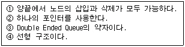
- ①, ②
- ①, ②, ③
- ①, ③, ④
- ①, ④
(정답률: 78%)
18. 분산데이터베이스시스템의 설명으로 옳지 않은 것은?
- 소프트웨어 개발비용이 감소한다.
- 지역 자치성이 보장된다.
- 시스템의 확장이 용이하다.
- 신뢰도가 향상된다.
(정답률: 85%)
19. Which of the following does not belong to the DML statement of SQL?
- SELECT
- DELETE
- CREATE
- INSERT
(정답률: 80%)
20. 괄호 속 내용으로 가장 적합한 것은?
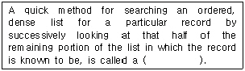
- tree search
- block search
- binary search
- sequential search
(정답률: 57%)
2과목: 전자 계산기 구조
21. 등각속도(CAV) 방식의 특징이 아닌 것은?
- 모든 트랙의 저장 밀도가 같다.
- 디스크 저장 공간이 비효율적으로 사용된다.
- 회전 구동장치가 간단하다.
- 디스크 평판이 일정한 속도로 회전한다.
(정답률: 34%)
22. JK 플립플롭을 그림과 같이 연결하면 어떤 플립플롭과 같은 동작을 하는가?
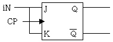
- D
- RS
- T
- Master-slave
(정답률: 58%)
23. 직접 메모리 액세스(DMA)의 특징이 아닌 것은?
- CPU의 도움없이 메모리와 I/O 장치 사이에서 전송을 시행한다.
- CPU와 DMA 제어기는 메모리와 버스를 공유한다.
- CPU의 상태 보존은 반드시 필요하다.
- 사이클 스틸을 발생하여 메모리 장치와 I/O 장치 사이의 자료전송을 수행한다.
(정답률: 51%)
24. 캐시(Cache) 메모리에서 특정 내용을 찾는 방식 중 매핑 방식에 주로 사용되는 메모리는?
- Nano Memory
- Associative Memory
- Virtual Memory
- Stack Memory
(정답률: 57%)
25. 컴퓨터의 주기억장치 용량이 8192비트이고, 워드 길이가 16비트일 때 PC(Program Counter), AR(Address Register)와 DR(Data Register)의 크기는?
- PC=8, AR=9, DR=16
- PC=9, AR=9, DR=16
- PC=16, AR=16, DR=16
- PC=8, AR=16, DR=16
(정답률: 49%)
26. Exclusive-OR Gate의 출력은
- (AB)'+AB
- A'B'+AB
- A'B+AB'
- AB'+AB'
(정답률: 70%)
27. 그림의 진리표에서 출력 Y를 최소화 하면?
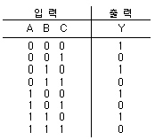
- Y=A'B
- Y=AB
- Y=A+B'
- Y=C'
(정답률: 65%)
28. 컴퓨터 내부에서 시스템 순간순간의 상태를 나타내는 것은?
- SP
- PSW
- Interrupt
- MAR
(정답률: 63%)
29. 주소 지정 방식(Addressing Mode) 중에서 프로그램 카운터 값에 명령어의 주소 부분을 더해서 실제 주소를 구하는 방식은?
- 직접 번지 방식
- 즉시 번지 방식
- 상대 번지 방식
- 레지스터 번지 방식
(정답률: 57%)
30. 컴퓨터 시스템이 작동되면 먼저 프로그램 카운터의 초기 주소값이 결정되고 주소에 의하여 명령어가 기억장치로부터 읽혀지는 것을 무엇이라 하는가?
- 인출(Fetch)
- 실행(Execute)
- 간접(Indirect)
- 인터럽트(Interrupt)
(정답률: 63%)
31. OP-Code가 4비트면 연산자의 종류는 몇 개가 생성될 수 있는가?
- 24-1
- 24
- 23
- 23-1
(정답률: 60%)
32. 0-주소 인스트럭션과 관게 있는 것은?
- Scratch-pad Register
- Accumulator
- Stack
- Instruction Buffer
(정답률: 73%)
33. 인터럽트 체제의 기본 요소에 속하지 않는 것은?
- 인터럽트 처리 기능
- 인터럽트 요청 신호
- 인터럽트 스테이트
- 인터럽트 취급 루틴
(정답률: 57%)
34. 명령어의 Operand 부분에 실제 데이터를 갖고 있는 방식은?
- 즉시(Immediate) 주소지정 방식
- 베이스(Base) 주소지정 방식
- 상대(Relative) 주소지정 방식
- 직접(Direct) 주소지정 방식
(정답률: 46%)
35. 다음 회로는 무엇인가?
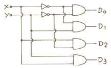
- Decoder
- Multiplexer
- Encoder
- Shifter
(정답률: 67%)
36. 하드웨어 신호에 의하여 특정 번지의 서브루틴을 수행하는 것은?
- Handshaking Mode
- Vectored Interrupt
- DMA
- Subroutine Call
(정답률: 53%)
37. 다음 중 단항(Unary) 연산이 아닌 것은?
- Complement
- Rotate
- AND
- Shift
(정답률: 68%)
38. ROM 칩에 필요하지 않은 신호는?
- 쓰기 신호
- 주소
- 읽기 신호
- 칩 선택 신호
(정답률: 63%)
39. 중앙처리장치가 주기억장치보다 더 빠르기 때문에 프로그램 실행 속도를 중앙처리장치의 속도에 근접하도록 하기 위해서 사용되는 기억장치는?
- 가상기억 장치
- 모듈기억 장치
- 보조기억 장치
- 캐시기억 장치
(정답률: 76%)
40. 로더(Loader)의 기능 중 옳지 않은 것은?
- 할당(Allocation)
- 재배치(Relocation)
- 링킹(Linking)
- 실행(Execution)
(정답률: 65%)
3과목: 운영체제
41. 기억장치의 관리 전략 중 반입(Fetch) 전략의 설명으로 옳은 것은?
- 프로그램/데이터를 주기억장치로 가져오는 시기를 결정하는 전략
- 프로그램/데이터에 대한 주기억장치 내의 위치를 결정하는 전략
- 주기억장치 내의 빈공간 확보를 위해 제거할 프로그램/데이터를 선택하는 전략
- 프로그램/데이터의 위치를 이동시키는 전략
(정답률: 58%)
42. 데커(Dekker) 알고리즘에 대한 설명 중 옳지 않은 것은?
- 교착상태가 발생하지 않음을 보장한다.
- 프로세스가 임계영역에 들어가는 것이 무한정 지연될 수 있다.
- 공유 데이터에 대한 처리에 있어서 상호배제를 보장한다.
- 별도의 특수 명령어 없이 순수하게 소프트웨어로 해결된다.
(정답률: 30%)
43. 하나의 프로세스가 작업 수행 과정에서 수행하는 기억 장치 접근에서 지나치게 페이지 폴트가 발생하여 프로세스 수행에 소요되는 시간보다 페이지 이동에 소요되는 시간이 더 커지는 현상은?
- 스레싱(Thrashing)
- 워킹세트(Working Set)
- 세마포어(Semaphore)
- 교환(Swapping)
(정답률: 77%)
44. 운영체제 형태 중 시대적으로 가장 먼저 생겨난 것은?
- 다중처리 시스템
- 시분할 시스템
- 일괄처리 시스템
- 분산처리 시스템
(정답률: 83%)
45. SCAN의 무한 대기 발생 가능성을 제거한 것으로 SCAN 보다 응답시간의 편차가 적고, SCAN과 같이 진행 방향상의 요청을 서비스하지만, 진행중에 새로이 추가된 요청은 서비스하지 않고 다음 진행시에 서비스하는 디스크 스케줄링 기법은?
- N-step SCAN 스케줄링
- C-SCAN 스케줄링
- SSTF 스케줄링
- FCFS 스케줄링
(정답률: 46%)
46. Working Set W(t, w)는 t-w 시간부터 t 까지 참조된 page 들의 집합을 말한다. 그 시간에 참조된 페이지가 {2, 3, 5, 5, 6, 3, 7}이라면 Working Set는?
- {3, 5}
- {2, 6, 7}
- {2, 3, 5, 6, 7}
- {2, 7}
(정답률: 67%)
47. UNIX 운영체제의 특징으로 볼 수 없는 것은?
- 대화식 운영체제이다.
- 다중 사용자 시스템(Multi-user system)이다.
- 대부분의 코드가 어셈블리 언어로 기술되어 있다.
- 높은 이식성과 확장성이 있다.
(정답률: 75%)
48. 분산시스템을 설계하는 주된 이유가 아닌 것은?
- 신뢰도 향상
- 자원 공유
- 보안의 향상
- 연산 속도 향상
(정답률: 77%)
49. 스레드(Thread)에 관한 설명으로 옳지 않은 것은?
- 스레드는 하나의 프로세스 내에서 병행성을 증대시키기 위한 메커니즘이다.
- 스레드는 프로세스의 일부 특성을 갖고 있기 때문에 경량(ligiht weight) 프로세스라고도 한다.
- 스레드는 동일 프로세스 환경에서 서로 독립적인 다중 수행이 불가능하다.
- 스레드 기반 시스템에서 스레드는 독립적인 스케줄링의 최소 단위로서 프로세스의 역할을 담당한다.
(정답률: 76%)
50. 직접 파일(Direct File)에 대한 설명으로 거리가 먼 것은?
- 직접 접근 기억장치의 물리적 주소를 통해 직접 레코드에 접근한다.
- 키에 일정한 함수를 적용하여 상대 레코드 주소를 얻고, 그 주소를 레코드에 저장하는 파일 구조이다.
- 직접 접근 기억장치의 물리적 구조에 대한 지식이 필요하다.
- 직접 파일에 적합한 장치로는 자기테이프를 주로 사용한다.
(정답률: 49%)
51. 파일 손상을 막기 위한 파일 보호 기법이 아닌 것은?
- 파일 명명(File Naming)
- 접근 제어(Access Control)
- 암호화(Password/Cryptography)
- 복구(Recovery)
(정답률: 60%)
52. 스풀링(Spooling)에 대한 설명으로 옳지 않는 것은?
- “Spooling”은 “Simultaneous Peripheral Operation On-Line)”의 약자이다.
- 스풀링은 주기억장치를 버퍼로 사용한다.
- 어떤 작업의 입/출력과 다른 작업의 계산을 병행 처리하는 기법이다.
- 다중 프로그래밍 시스템의 성능 향상을 가져온다.
(정답률: 57%)
53. 운영체제를 기능상으로 분류했을 때, 제어 프로그램 중 보기의 설명에 해당하는 것은?
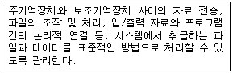
- 문제 프로그램(Problem Program)
- 감시 프로그램(Supervisor Program)
- 작업 제어 프로그램(Job Control Program)
- 데이터 관리 프로그램(Data Management Program)
(정답률: 57%)
54. Flynn이 제안한 4가지 병렬처리 방식 중에서 이론적일 뿐 실질적인 처리방식으로 사용되지 않는 구조는?
- SISD
- SIMD
- MISD
- MIMD
(정답률: 42%)
55. UNIX에서 프로세스를 복제하는 기능과 관계되는 것은?
- getppid
- getpid
- fork
- exec
(정답률: 58%)
56. 교착상태 해결 방안으로 발생 가능성을 인정하고 교착 상태가 발생하려고 할 때, 교착상태 가능성을 피해가는 방법은?
- 예방(Prevention)
- 발견(Detection)
- 회피(Avoidance)
- 복구(Recovery)
(정답률: 78%)
57. 4개의 페이지를 수용할 수 있는 주기억장치가 있으며, 초기에는 모두 비어 있다고 가정한다. 다음의 순서로 페이지 참조가 발생할 때, LRU 페이지 교체 알고리즘을 사용할 경우 몇 번의 페이지 결함이 발생하는가?
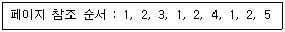
- 4회
- 5회
- 6회
- 7회
(정답률: 52%)
58. 운영체제를 자원 관리자(Resource Manager)라는 관점으로 보았을 때, 자원들을 관리하는 과정을 순서대로 옳게 나열한 것은?
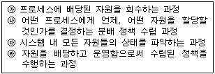
- ㉮-㉯-㉰-㉱
- ㉯-㉰-㉱-㉮
- ㉮-㉰-㉯-㉱
- ㉰-㉱-㉯-㉮
(정답률: 41%)
59. UNIX 시스템에서 쉘(Shell)에 대한 설명으로 옳지 않은 것은?
- 명령어를 해석하는 명령해석기이다.
- 프로세스의 관리를 한다.
- 단말장치로부터 받은 명령을 커널로 보내거나 해당 프로그램을 작동시킨다.
- 사용자와 Kernel 사이에서 중계자 역할을 한다.
(정답률: 65%)
60. NUR 기법은 호출 비트와 변형 비트를 가진다. 다음 중 가장 나중에 교체될 페이지는?
- 호출 비트 : 0, 변형 비트 : 0
- 호출 비트 : 0, 변형 비트 : 1
- 호출 비트 : 1, 변형 비트 : 0
- 호출 비트 : 1, 변형 비트 : 1
(정답률: 62%)
4과목: 소프트웨어 공학
61. 소단위명세서(Mini-Specification)에 관한 내용 중 옳지 않은 것은?
- 반 페이지나 한 페이지 정도의 크기로 세분된 모듈을 작성할 때 사용한다.
- DFD에서는 한 개의 처리공정이 그 대상이 되지만, 한 공정의 기능이 두 가지 이상이거나 더 세분화함으로써 소단위명세서를 이해하기가 쉬워진다면 더욱 세분화될 수도 있다.
- 소단위명세서를 작성하는 도구에는 서술문장, 의사결정나무, 의사결정표, 표, 그래프 등이 있다.
- 소단위명세서는 구조적 언어를 사용하지 않고, 자연어를 사용하여 이해하기 쉽고 엄밀하게 기술한다.
(정답률: 50%)
62. SOFTWARE Project의 비용 결정 요소와 가장 관련이 적은 것은?
- 개발자의 능력
- 요구되는 신뢰도
- 하드웨어의 성능
- 개발제품의 복잡도
(정답률: 51%)
63. 소프트웨어의 전통적 개발 단계 중 요구분석 단계에 대한 설명으로 옳지 않은 것은?
- 프로젝트를 이해할 수 있는 개발의 실질적인 첫 단계이다.
- 현재의 상태를 파악하고 문제를 정의한 후, 문제해결과 목표를 명확히 도출하는 단계이다.
- 소프트웨어가 가져야 될 기능을 기술하는 단계이다.
- 고품질의 소프트웨어를 개발하기 위해 소프트웨어의 내부 구조를 기술하는 단계이다.
(정답률: 63%)
64. DFD(Data Flow Diagram)에 대한 설명으로 거리가 먼 것은?
- 자료 흐름 그래프 또는 버블(Bubble) 차트라고도 한다.
- 구조적 분석 기법에 이용된다.
- 시간 흐름의 개념을 명확하게 표현할 수 있다.
- DFD의 요소는 화살표, 원, 사각형, 직선(단선/이중선)으로 표시한다.
(정답률: 51%)
65. 객체지향 개념에서 연관된 데이터와 함수를 함께 묶어 외부와 경계를 만들고 필요한 인터페이스만을 밖으로 드러내는 과정을 무엇이라고 하는가?
- 메시지
- 캡슐화
- 상속
- 다형성
(정답률: 78%)
66. 소프트웨어공학의 공학(Engineering)이 가지는 의미와 어울리지 않는 것은?
- 예술성
- 경제성
- 보편타당성
- 적시성
(정답률: 78%)
67. 현재 프로그램으로부터 데이터, 아키텍쳐, 그리고 절차에 관한 분석 및 설게 정보를 추출하는 과정은?
- 재공학(Re-Engineering)
- 역공학(Reverse Engineering)
- 순공학(Forward Engineering)
- 재사용(Reuse)
(정답률: 59%)
68. 객체 지향의 기본 개념 중 객체가 메시지를 받아 실행해야 할 객체의 구체적인 연산을 정의한 것은?
- 메소드
- 추상화
- 상속성
- 캡슐화
(정답률: 77%)
69. 프로토타입 모형의 장점으로 가장 적절한 것은?
- 프로젝트 관리가 용이하다.
- 노력과 비용이 절감된다.
- 요구사항을 충실히 반영한다.
- 관리와 개발이 명백히 구분된다.
(정답률: 67%)
70. 하나의 프로그램을 몇 개의 작은 부분으로 분할하는 경우, 그 분할단위를 일반적으로 모듈(Module)이라고 한다. 다음 중 모듈에 대한 설명으로 옳은 것은?
- 모듈의 독립성을 높여주기 위해서는 각 모듈간의 관련성을 최소로 하며, 이 경우에 응집도(Cohesion)는 최소가 된다.
- 모듈간의 관련성을 최대로 하면 모듈의 독립성은 저하되며, 이 경우에 모듈의 결합도(Coupling)는 최소가 된다.
- 복잡성을 감소시키는 수단으로 독립성의 개념이 많이 적용되고 있으며, 모듈의 독립성 척도로서 결합도는 고려 대상이 아니며, 응집도만 적용된다.
- 모듈의 결합도는 자료결합도(Data Coupling)로, 모듈의 응집도는 기능적 응집도(Functional Cohesion)로 하는 것이 가장 바람직하다.
(정답률: 47%)
71. CASE(Computer Aided Software Engineering)에 대한 설명으로 옳은 것은?
- 소프트웨어 생명 주기(Life Cycle)의 전체 단계를 연결시켜 주는 통합된 도구를 제공한다.
- CASE 패키지의 3단계는 도식목차, 총괄 다이어그램, 상세 다이어그램으로 구분된다.
- 상위(Upper) CASE에서는 주로 코드를 작성하고 테스트하며, 문서화하는 작업을 지원한다.
- 소프트웨어 개발의 생산성과 신뢰성에 저하를 가져와 널리 사용되지 못하고 있다.
(정답률: 48%)
72. 프로젝트 일정 관리시 사용하는 칸트(Gantt) 차트에 대한 설명으로 옳지 않은 것은?
- 막대로 표시하며 수평 막대의 길이는 각 태스크의 기간을 나타낸다.
- 이정표, 기간, 작업, 프로젝트 일정을 나타낸다.
- 시간선(Time-Line) 차트라고도 한다.
- 작업들 간의 상호 관련성, 결정경로를 표시한다.
(정답률: 65%)
73. 모듈안의 작동을 자세히 관찰할 수 있으며, 프로그램 원시 코드의 논리적인 구조를 커버(Cover)하도록 테스트 케이스를 설계하는 프로그램 테스트 방법은?
- 블랙 박스 테스트
- 화이트 박스 테스트
- 알파 테스트
- 베타 테스트
(정답률: 67%)
74. 프로토타이핑(Prototyping) 접근방법을 채용할 때의 이익은 주로 정보문제의 본질에 대한 불확실성과 그 정보문제를 해결하기 위해 사용자가 제시하는 요구의 불확실성을 줄이는데 있다. 다음 중 불확실성 결정 요인에 해당하지 않는 것은?
- 지원이 필요한 일로부터의 요구연역(要求演繹)
- 사용자와 분석자의 지식과 경험의 수준
- 커뮤니케이션 문제가 일어날 가능성
- 프로토타이핑 시에 소요되는 비용문제
(정답률: 61%)
75. 객체 모형(Object Model), 동적 모형(Dynamic Model), 기능 모형(Functional Model)의 3개 모형으로 구성되어 있는 객체지향 분석 기법은?
- Rambaugh Method
- Wirfs-Brock Method
- Jacobson Method
- Coad & Yourdon Method
(정답률: 75%)
76. 소프트웨어 유지보수에 관련된 설명으로 옳지 않은 것은?
- 유지보수는 소프트웨어가 인수, 설치된 후 발생하는 모든 공학적 작업을 말한다.
- 유지보수는 원인에 따라 수리(Corrective) 보수, 적응(Adaptive) 보수, 완전화(Perfective) 보수, 예방(Preventive) 보수 등이 있다.
- 소프트웨어에 가해지는 변경을 제어 관리하는 것을 형상 관리(Configuration Mnagement)라고 한다.
- 소프트웨어 비용 중 유지보수 비용은 개발비용 보다 적다.
(정답률: 72%)
77. 소프트웨어 유지보수 작업의 목적으로 부적절한 것은?
- 하자보수
- 환경적응
- 예방조치
- 설계수정
(정답률: 55%)
78. 민주주의적 팀(Democratic Teams)에 대한 내용으로 옳은 것은?
- 프로젝트 팀의 목표 설정 및 의사결정 권한이 팀 리더에게 주어진다.
- 조직적으로 잘 구성된 중앙 집중식 구조이다.
- 팀 구성원 간의 의사교류를 활성화시키므로 팀원의 참여도와 만족도를 증대시킨다.
- 팀 리더의 개인적 능력이 가장 중요하다.
(정답률: 75%)
79. LOC 기법에 의하여 예측된 총라인수가 25000 라인일 경우 개발에 투입될 프로그래머의 수가 5명이고, 프로그래머들의 평균 생산성이 월당 500 라인일 때, 개발에 소요되는 기간은?
- 8개월
- 9개월
- 10개월
- 11개월
(정답률: 84%)
80. 소프트웨어 프로젝트 계획자가 프로젝트를 시작하기 전에 추정해야 하는 항목으로 거리가 먼 것은?
- 얼마나 오래 걸리겠는가?
- 얼마나 많은 노력이 요구되겠는가?
- 얼마나 많은 사람이 참여해야 하는가?
- 얼마의 유지보수 비용이 들어갈 것인가?
(정답률: 54%)
5과목: 데이터 통신
81. 흐름 제어 방식에서 일반적으로 한번에 여러 개의 프레임을 전송할 경우 효율적인 기법은?
- 정지 및 대기
- 슬라이딩 윈도우
- 다중 전송
- 적응적 ARQ
(정답률: 45%)
82. 데이터 통신에서 전송제어 절차에 해당되지 않는 것은?
- 통신 회선 접속
- 데이터 링크 설정
- 데이터 구조의 확인
- 통신 회선 절단
(정답률: 72%)
83. LAN(Local Area Network)의 특징 설명 중 옳지 않은 것은?
- 단일 건물내에 설치되고, 패킷 지연이 최소화 된다.
- 확장성과 재배치가 좋지 않고, 경로 설정이 필요하다.
- 네트워크 내의 정보기기와 통신이 가능하다.
- 광대역 전송 매체의 사용으로 고속 통신이 가능하다.
(정답률: 51%)
84. 보오 속도가 2400[baud]이고, 8위상 편이 변조 방식을 사용할 때 전송 속도는?
- 19200bps
- 7200bps
- 4800bps
- 2400bps
(정답률: 60%)
85. 컴퓨팅, 교환, 디지털 전송 장치간의 구분이 없어지고, 음성, 데이터 및 이미지 전송에 동일한 디지털 기술이 적용된 통합 시스템은?
- LAN
- ISDN
- PSN
- VAN
(정답률: 63%)
86. 다중화기(Multiplexer) 중 변·복조 기능도 포함하는 기기는?
- 동기식 시분할 다중화기
- 비동기식 시분할 다중화기
- 통계적 시분할 다중화기
- 주파수 분할 다중화기
(정답률: 46%)
87. VAN의 주요 통신 처리 기능이 아닌 것은?
- 미디어 변환
- Mail Box
- 데이터베이스 구축
- 프로토콜 변환
(정답률: 55%)
88. 다음은 데이터 통신 시스템에서 발생하는 잡음에 대한 설명이다. 어떤 잡음에 대한 설명인가?
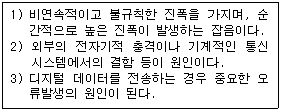
- 열잡음
- 누화잡음
- 충격잡음
- 상호변조 잡음
(정답률: 67%)
89. OSI 7계층 중 장치와 전송매체 간의 인터페이스 특성 규정, 전송 매체의 유형 규정, 전송로의 연결, 유지 및 해제를 담당하는 계층은?
- 전송 계층
- 망 계층
- 데이터링크 계층
- 물리 계층
(정답률: 25%)
90. 전송 매체상의 전송 프레임마다 해당 채널의 시간 슬롯이 고정적으로 할당되는 다중화 방식은?
- 주파수 분할 다중화
- 동기식 시분할 다중화
- 통계적 시분할 다중화
- 코드 분할 다중화
(정답률: 64%)
91. 다음 전송제어 문자 중 부정적 응답에 해당하는 전송제어 문자는?
- NAK(Negative AcKnowledge)
- ACK(ACKnowledge)
- EOT(End of Transmission)
- SOH(Start of Heading)
(정답률: 83%)
92. OSI 계층의 네트워크 계층에 해당하는 X.25의 계층은?
- 패킷 계층
- 프레임 계층
- 응용 계층
- 세션 계층
(정답률: 55%)
93. 컴퓨터를 이용한 정보통신 시스템에서 정확한 데이터를 주고 받기 위해서는 컴퓨터 간의 미리 정해진 약속이 필요하다. 이러한 약속을 무엇이라 하는가?
- Topology
- Protocol
- OSI 7 Layer
- DNS
(정답률: 76%)
94. 통계적 TDM에서 다중화된 회선의 데이터 전송율과 접속장치들의 데이터 전송율의 합과의 일반적인 관계는?
- 다중화된 회선의 데이터 전송율 < 접속장치들의 데이터 전송율의 합
- 다중화된 회선의 데이터 전송율 > 접속장치들의 데이터 저송율의 합
- 다중화된 회선의 데이터 전송율 ≥ 접속장치들의 데이터 전송율의 합
- 다중화된 회선의 데이터 전송율 = 접속장치들의 데이터 전송율의 합
(정답률: 37%)
95. 패킷 교환망에서 유통되는 패킷의 수를 적절히 조절해 통신망을 효율적으로 사용하고자 하는 제어 기법이 트래픽(Traffic) 제어 기법이다. 다음 중 트래픽 제어 기법에 해당되지 않는 것은?
- 에러 제어(Error Control)
- 흐름 제어(Flow Control)
- 혼잡 제어(Congestion Control)
- Dead-Lock 방지 기법
(정답률: 36%)
96. 베이직 데이터 전송제어 절차가 아닌 것은?
- SOH
- STX
- ETX
- FCS
(정답률: 53%)
97. 대역폭(bandwidth)에 관한 설명으로 옳은 것은?
- 최고 주파수를 의미한다.
- 최저 주파수를 의미한다.
- 최고 주파수의 절반을 의미한다.
- 최고 주파수와 최저 주파수 사이 간격을 의미한다.
(정답률: 79%)
98. 공중 통신 회선에 교환 설비, 컴퓨터 및 단말기 등을 접속시켜 새로운 부가 기능을 제공하는 통신망은?
- VAN
- LAN
- ISDN
- MAN
(정답률: 68%)
99. 다음 프로토콜 중 네트워크 계층 구조의 하나인 트랜스포트(Transport) 계층에서 사용되는 프로토콜은?
- TCP
- IP
- Telnet
- SNMP
(정답률: 56%)
100. 데이터는 한쪽 방향으로만 흐르고 병목 현상이 드물지만, 두 노드 사이의 채널이 고장 나면 전체 네트워크가 손상될 수 있는 단점을 가지는 토폴로지는?
- 링형 토폴로지
- 망형 토폴로지
- 성형 토폴로지
- 계층형 토폴로지
(정답률: 66%)